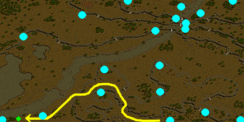
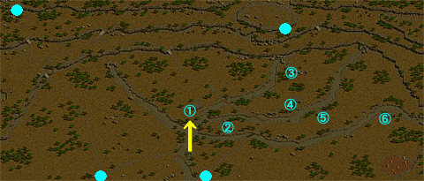
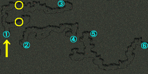
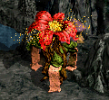
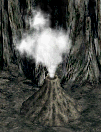
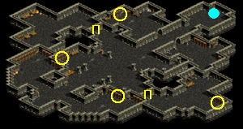
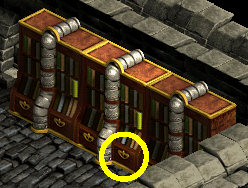

少女とお父さん
通称、「シア・ルフト」クエ。終盤で専用秘密ダンジョンに入場可能。| 少女とお父さん | |
|---|---|
少女のお父さんはアリアンの傭兵ギルドで働いているという。アリアン傭兵ギルドのセシルを尋ねて、少女のお父さんの消息について聞いてみよう。 バントリーは東プラトン街道 / イースタンブリッジ付近にあるアルパス地下監獄の秘密ダンジョンで孤立しているという。セシルの話によると、秘密ダンジョンはパーティーを組まなければ探し出すことができないという。ただし、その場所は110レベル以上になると探索することができない。もし、110レベルを超えたらセシルのもとに帰るようにしよう。 バントリーは重要な証拠品を真紅の従者に奪われたと言う。魔法陣の辺りで真紅の従者を見つけ出し、証拠品を回収しよう。 真紅の従者の呪いで、バントリーの証拠品である文書が燃えてしまった。燃え残った文書を持って、アリアン傭兵ギルドのセシルのもとに戻ろう。 バントリーからの手紙を引き受けた。ブルンネンシュティグのエミリーに手紙を渡してあげよう。 エミリーのお父さんであるバントリーは、小都市ビッグアイの応急治療室で治療を受けていると言う。彼を訪ねて行って話をしてみよう。 |
|
| 受諾場所 | 古都ブルンネンシュティグ エミリー(130.154) |
| 受諾条件 | Lv95～300 |
| 報酬 | ?経験値60万 ?経験値61万 |
| アリアン傭兵ギルド | セシル(12.9)へ Lv95～110の場合 秘密ダンジョン アルパス地下監獄の隠された地下牢 セシルへ |
| 小都市ビッグアイ応急治療室 | Lv111～300の場合 バントリー(8.7)へ |
| 古都ブルンネンシュティグ | エミリーへ ?怪我のことを言う。 → 経験値60万 ?言わない。 → 経験値61万 |
| 未完の任務 | |
傭兵ギルドのセシルから、バヘル大河の水質汚染について調査依頼を受けた。バヘル大河 / 東バヘル川で、イルレインという傭兵を捜してみよう。東バヘル川から真っ直ぐ上がっていくと、捜すことができると言う。 イルレインは、バヘル川の上流である泉の水の穴に、水質汚染の原因があるようだと言う。いくつかのサンプルを採集して、イルレインの所に持って行こう。 イルレインから頼まれたサンプルをすべて手に入れた。彼女の所に戻ってサンプルを渡そう。 アリアン傭兵ギルドのセシルに、バヘル川の水質汚染関連サンプルを渡そう。 新しい任務の依頼主であるスマグ・ウィザードギルドのスタークを尋ねて話をしてみよう。 スタークから、任務に関する新情報が書かれている依頼書を受け取った。アリアン傭兵ギルドのセシルに、更新されたウィザードギルドの依頼書を渡そう。 |
|
| 受諾場所 | アリアン傭兵ギルド セシル(12.9) |
| 受諾条件 | Lv120～300 |
| 報酬 | 経験値100万 |
| バヘル大河 / 東バヘル川上流 | ◆イルレイン(27.363)へ 鉱山町ハノブ←↑←↑     |
| 泉の水の穴 | サンプル3つを集める     怪しい石 = ラットシーフ(Lv115)、ハンター(Lv125)、狩犬(Lv120)を倒す。 どれでも可。怪しい石を最後にすると更新されない場合があるため、最初に。 怪しい花粉 = 花(24.9)をクリック きつい臭いのガス = ガス(24.57)をクリック |
| バヘル大河 / 東バヘル川上流 | イルレインへ |
| アリアン傭兵ギルド | セシルへ |
| ウィザードギルド | スターク(4.40)へ |
| アリアン傭兵ギルド | セシルへ |
| 真っ赤な足跡 | |
スタークの情報によれば、シア・ルフトの足跡が、麻薬巣窟地下3階に残っているはずだと言う。そこの器物を調べて、跡を探し出してみよう。 魔法のオーラが感じられる赤黒いオーラの巻物を見つけた。アリアン傭兵ギルドのセシルに、この事を報告しよう。 赤黒いオーラの巻物の封印を解くために、スマグ・ウィザードギルドのスタークの所に行ってみよう。 スタークは文書にかかっている封印を解除するための材料を手に入れなければならないと言う。キャンサー気孔に生息するデスピンサーから入手できるデスピンサーの毒針が20個必要だ。そして、スマグ魔法用品店のカルナンから反魔法探知機を受け取って来よう。 すべての材料を集めた。急いでスタークに材料を渡そう。 |
|
| 受諾場所 | アリアン傭兵ギルド セシル(12.9) |
| 受諾条件 | Lv130～300 |
| 報酬 | 経験値130万 |
| 麻薬巣窟 Ｂ３ | 本棚(19.37)(37.60)(38.8)(70.68)をクリック。 100～400程のダメージを受ける。   本棚(70.68)は非常にクリックしにくいため、○の部分にカーソルを合わせるとよい。 |
| アリアン傭兵ギルド | セシルへ ?私が開けてみます。 → 200～400程のダメージを受ける ?こういう時には慎重にならないと。 → 安全に進行 |
| ウィザードギルド | スターク(4.40)へ |
| キャンサー気孔 Ｂ２ | デスピンサー(Lv65)を20匹倒す |
| スマグ魔法用品店 | カルナン(24.15)へ |
| ウィザードギルド | Lv170以上でスタークへ |
| 真紅の魔法石 | |
魔法都市スマグの住民たちからシア・ルフトの新しいうわさを聞いてみよう。 ハンフィ山脈に位置した河口ダンジョン'ラ'で、シア・ルフトを見たという、うわさを聞いた。メロウマウラーというモンスターが彼と関係があるようだ。調査をしてみよう。 ハンフィ山脈に位置した河口ダンジョン'ラ'で泉の穴から手に入れたシア・ルフトの魔法石と似ている品物をまた探し出した。急いで、スタークに見せてあげよう。 傭兵ギルドの部隊が、危機に陥るかもしれない状況だ。急いで、セシルに魔法石の危険性を知らせるようにしよう。 シア・ルフトの魔法石によって、傭兵ギルドの部隊が多大な被害を受けた。セシルが状況を確認する間、スマグ・ウィザードギルドのスタークに魔法石の対処方法について聞いてみよう。 |
|
| 受諾場所 | ウィザードギルド スターク(4.40) |
| 受諾条件 | Lv170～300 |
| 報酬 | 経験値250万 |
| 魔法都市スマグ | 住民4人へ ウィザード(22.56) ウィザード(24.32) マーク(96.65) サスピン(62.24)?こんにちは。ちょっと聞きたいことがあるのですが、良いですか？ |
| 河口ダンジョン 'ラ' Ｂ１ | メロウマウラー(Lv190)を倒す |
| ウィザードギルド | スタークへ、ワープ |
| アリアン傭兵ギルド | セシル(12.9)へ 魔法傭兵ルイーズ(30.48)へ セシルへ |
| ウィザードギルド | スタークへ |
| 安定剤製作 | |
シア・ルフトが作った魔法石の爆発を阻むための安定剤を製作しなければならない。すでに、スタークが安定剤の製作に必要な材料類を注文しておいたと言うから、急いで材料を引き取りに行こう。 安定剤の製作のための材料をすべて手に入れた。急いでスタークに材料を渡そう。 安定剤の製作に成功した。アリアン傭兵ギルドのセシルにこの事を伝えた後、次の計画を聞こう。 セシルは今回の任務の危険度を考慮して、全員のレベルが210以上のメンバーで、パーティーを組まなければならないと言う。まずは、力になる仲間たちを集めてから、セシルに次の計画を聞くことにしよう。 安定剤の製作には成功したが、今の能力では効能が現われないそうだ。レベルを185以上に成長させた後、また、セシルに会うことにしよう。 |
|
| 受諾場所 | ウィザードギルド スターク(4.40) |
| 受諾条件 | Lv170～300 |
| 報酬 | 経験値310万 |
| 鉱山町ハノブ | ハギン(35.18)へ ?スタークさんが、注文した物を取りに来ました。 |
| 港街ブリッジヘッド | 倉庫番ネビル(26.30)へ |
| アリアン傭兵ギルド | セシル(12.9)へ |
| テンドペンド平原 / ブリッジヘッド北部地域 | マージルリンド(43.165)へ 鉱山町ハノブ・港街ブリッジヘッド・オアシス都市アリアン・魔法都市スマグのどこか1つを選択してワープできる。 |
| スマグ魔法用品店 | カルナン(24.15)へ |
| ウィザードギルド | スタークへ |
| アリアン傭兵ギルド | Lv185以上でセシルへ Lv210～300のメンバーでパーティーを組みセシルへ、リーダーでなくても可。 Lv300以上の場合は、「上級傭兵たちが、すでにシア・ルフトを征伐したそうです。」と言われ、クエスト終了、シア・ルフトは発生しない。 |
| シア・ルフト | |
全員のレベルが210以上のパーティーで、ハンヒ山脈に位置する河口ダンジョン‘ラ’B2の秘密ダンジョンを探しに行こう。そこに行けば、傭兵ギルドの偵察兵に会えると言う。ここの秘密ダンジョンは300レベル以上になると探索することができないと言う。もし、300レベルを超えていたら、セシルのもとに戻ろう。 他のパーティーメンバーがモンスター達の目を引いてくれているうちに、人質として捕まえられた5人の傭兵を救出しよう。そして、今回の事件の元凶であるシア・ルフトを退治しよう。 シア・ルフトを退治した。アリアン傭兵ギルドのセシルの所に戻って、この事を報告しよう。 任務完了の報告書をスマグ・ウィザードギルドのスタークに渡そう。 |
|
| 受諾場所 | アリアン傭兵ギルド セシル(12.9) |
| 受諾条件 | Lv210～300 |
| 報酬 | Lv210～299 ?経験値390万 ?経験値420万 Lv300以上 経験値420万 |
| アリアン傭兵ギルド | Lv210～299の場合 秘密ダンジョン 河口ダンジョン'ラ'の隠された洞窟 セシルへ ①これからは、スタークさんの顔を見る事もないですね。 → 経験値390万 ②その完了報告書を私が伝えに行っても良いでしょうか？ → ウィザードギルドのスターク(4.40)へ、経験値420万 Lv300以上の場合 セシルへ 「上級傭兵たちが、すでにシア・ルフトを征伐したそうです。」と言われ、クエスト終了、経験値420万。 |
[参考] Yotsuba Quest DataBase